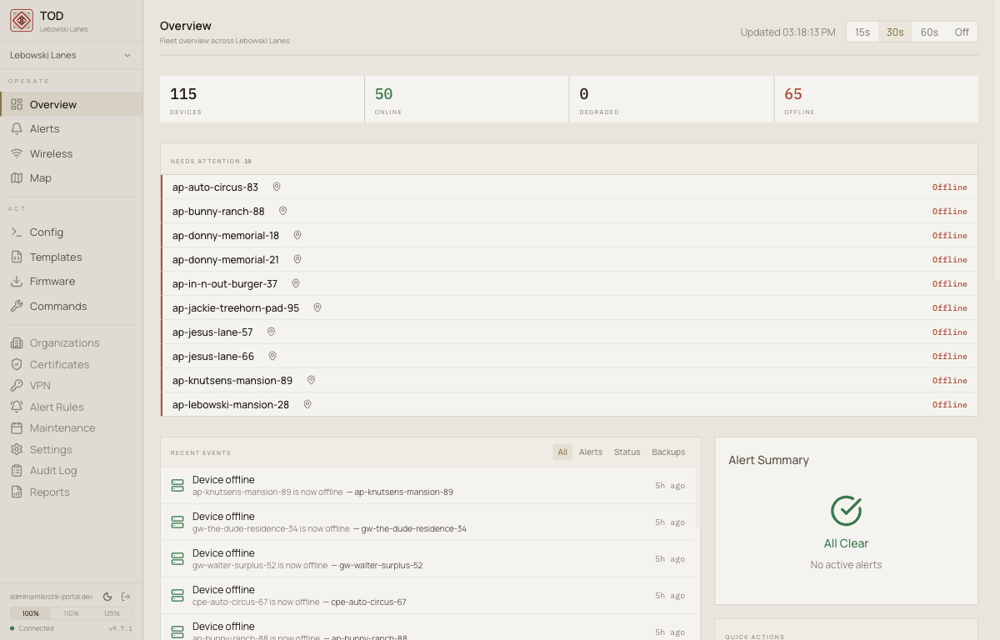
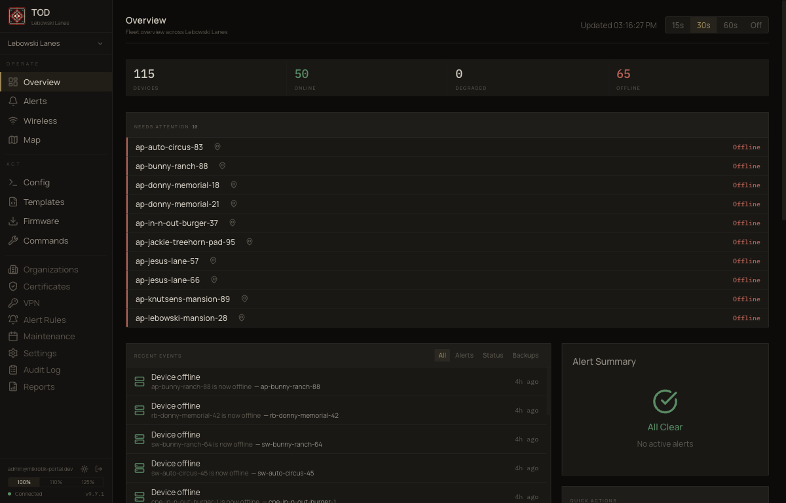
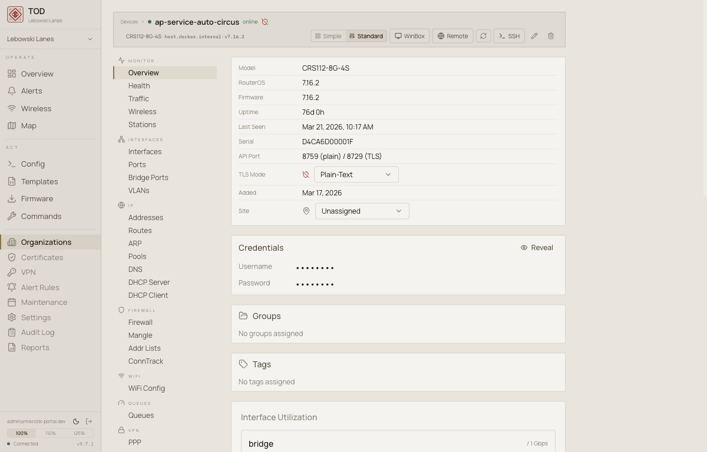
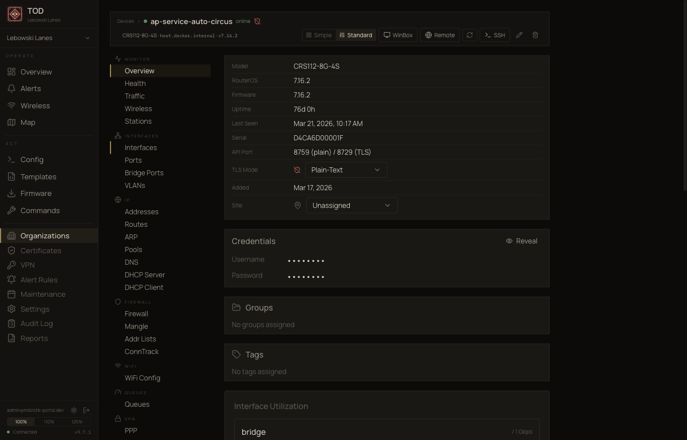
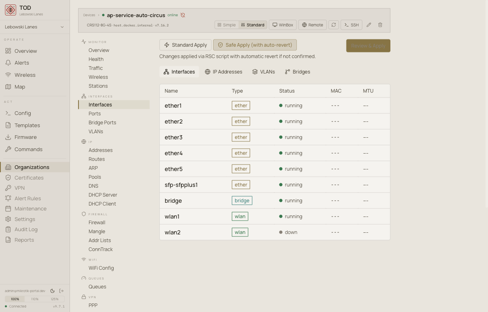
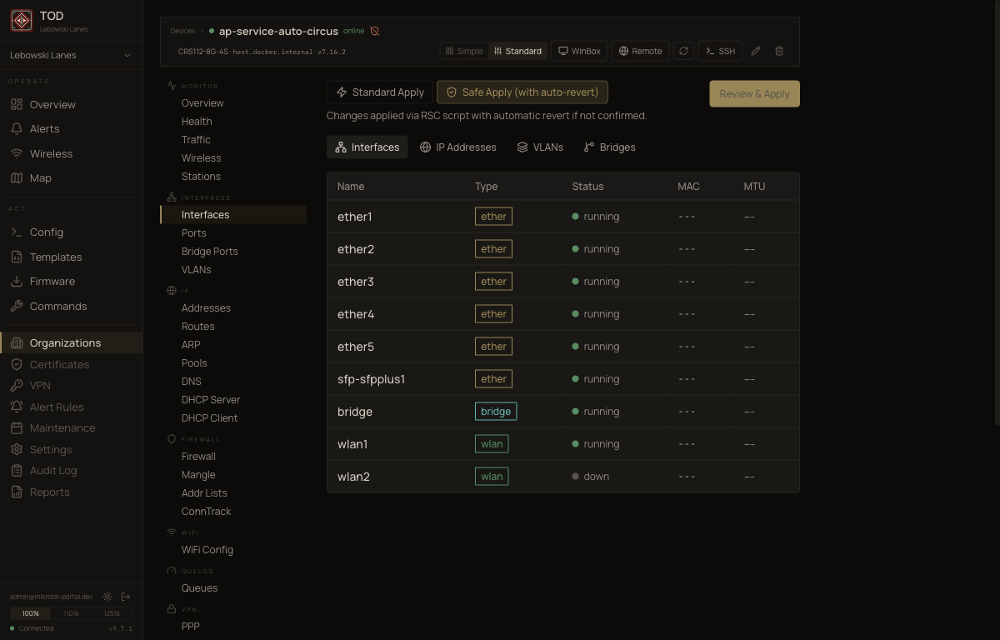
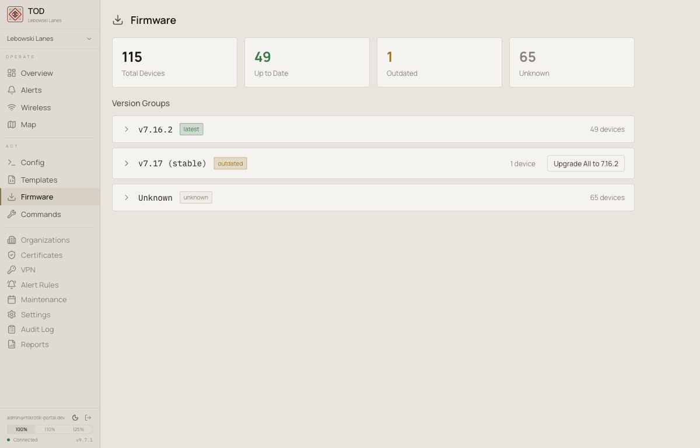
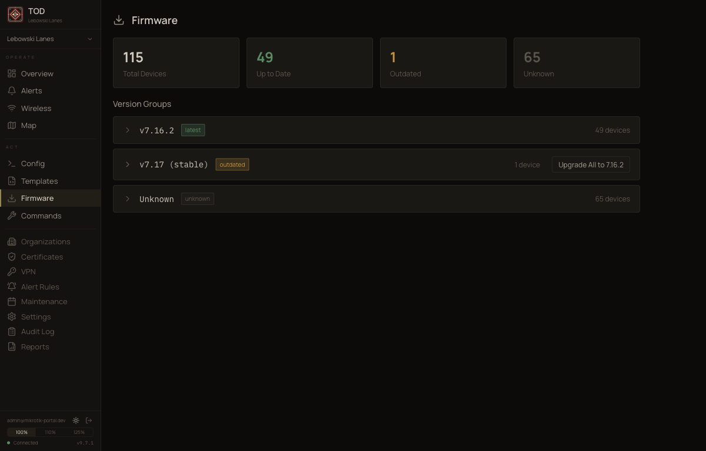

The Other Dude
MikroTik fleet management. Self-hosted. Source-available.
What it does
- Monitor device state across your fleet
- Push configuration with automatic rollback
- Track config changes in git
- Manage firmware versions
- WinBox in the browser
- VPN overlay for NAT traversal
- Multi-tenant with row-level security
- Zero-knowledge authentication (SRP-6a)
Screenshots








What it is not
- Not finished
- Not stable
- Not for everyone
- Things break, APIs change. That is intentional before v11.
Status
| Version | 9.7.1 |
| License | BSL 1.1 (converts to Apache 2.0 in 2030) |
| Free tier | 250 devices |
| Stability | Breaking changes expected before v11 |
Setup
Requires Docker and PostgreSQL. See the documentation for full setup instructions.
# clone and run the setup wizard
git clone https://github.com/staack/the-other-dude.git
cd the-other-dude
python3 setup.py
The setup wizard handles database, cryptographic keys, OpenBao, reverse proxy, and Docker images.